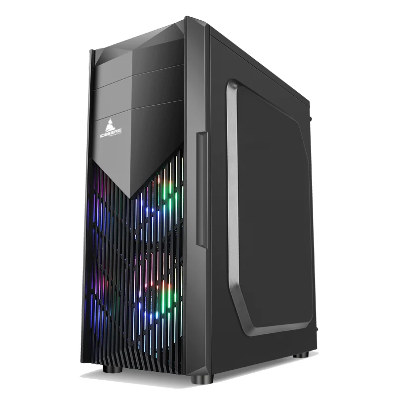
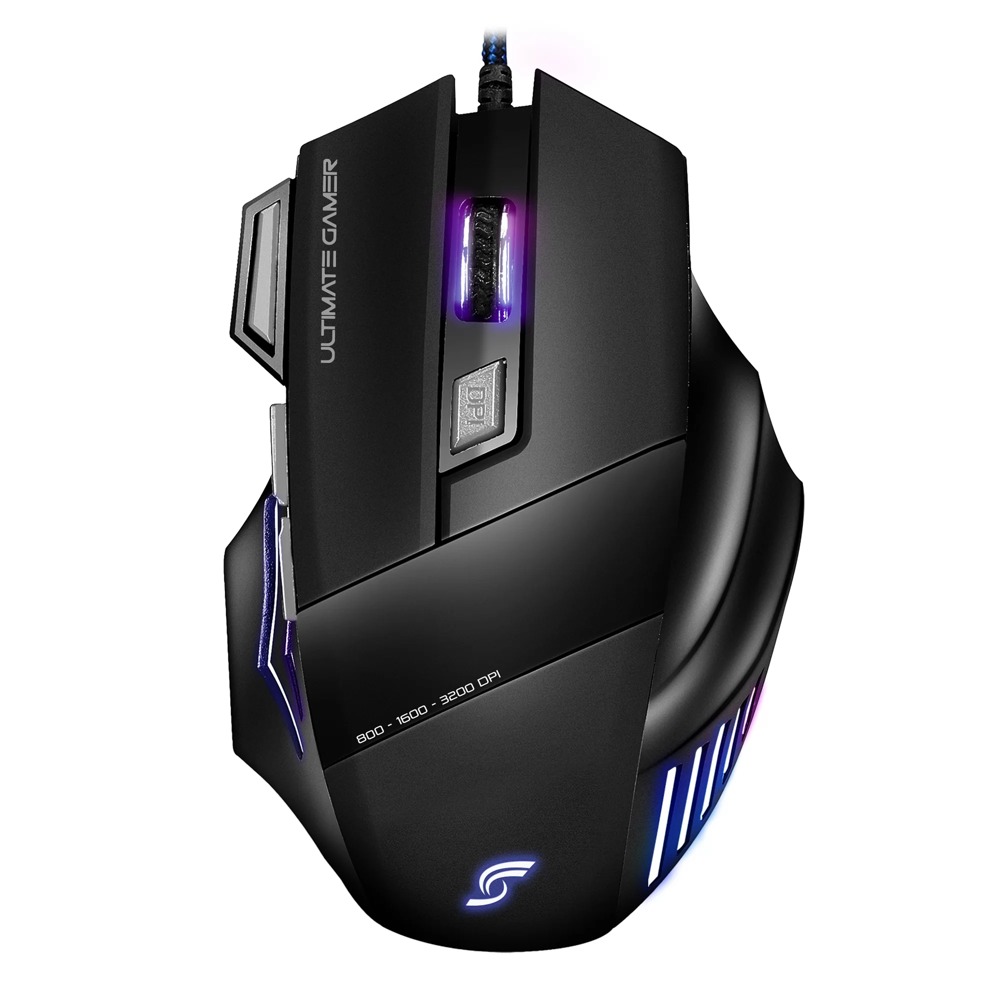

Mi Blog
En este espacio encontraras información sobre que es el hardware de los computadores,su evolución, sus partes, y los pioneros de la computación
¿Qué es el hardware?
En computación e informática, se conoce como hardware (del inglés hard, rígido, y ware, producto, mercancía) al conjunto de los componentes materiales, tangibles, de un computador o un sistema informático. Incluye todas las partes mecánicas, eléctricas y electrónicas, sin considerar los programas y otros elementos digitales que forman parte del software.
El término hardware se utilizó en inglés a partir del siglo XV para designar utensilios y herramientas fabricados con metales duros. Actualmente, hardware también se emplea con los significados de ‘ferretería, ‘armamento’ y ’conjunto de baratijas de metal’.
Con el surgimiento de las computadoras en la década de 1940, se comenzó a denominar hardware a los componentes físicos de la máquina para distinguirlos de los componentes lógicos.
La palabra se emplea en español y otros idiomas sin traducción. En el caso del español, se han propuesto, sin demasiado éxito, varios términos y expresiones equivalentes: equipo, equipo informático, componentes, soporte físico.
Evolución del hardware
Desde los primeros sistemas informáticos, el hardware ha experimentado importantes cambios, con el fin de obtener computadoras más veloces y capaces de desarrollar una mayor diversidad de tareas. Teniendo en cuenta los adelantos más significativos, se distinguen al menos cuatro generaciones de hardware:
Primera generación (1945-1956). Eran máquinas de cálculo que operaban mediante tubos al vacío.
Segunda generación (1957-1963). Se inventaron los transistores, gracias a los cuales se redujo enormemente el tamaño total de las computadoras.
Tercera generación (1964-1971). Se diseñaron los primeros circuitos integrados, impresos en pastillas de silicio, lo que permitió una mayor rapidez y efectividad en el procesamiento de la información.
Cuarta generación (1971-1981). Surgieron los microprocesadores, que permitieron la creación de la computadora personal (PC).
A estas cuatro generaciones, se añade a veces
una quinta generación (1982-1989), correspondiente al desarrollo de sistemas de computación paralela, capaces de ejecutar muchas operaciones simultáneamente. Se trató de un proyecto que no obtuvo los resultados esperados y se abandonó.
Partes Del Hardware
CPU
Unidad Central de procesamiento
Board
Es un circuito impreso sobre el que se conectan el resto de los componentes de la computadora.
Memoria Ram
Está formada por un conjunto de chips que almacenan información, a la que el procesador puede acceder rápidamente. Se denomina memoria de acceso aleatorio porque puede leer o escribir información ubicada en cualquier posición, sin necesidad de seguir un orden correlativo.
Disco Duro
El que guarda toda la información
Tarjeta Grafica
. Este componente procesa los datos de la CPU y los convierte en información visual, que pueda ser observada en un monitor.
Mouse
El ratón o mouse es la parte de computador que te permite interactuar con los objetos que aparecen en la pantalla, haciendo clic sobre ellos.
CPU
BOARD

RAM

Disco Duro

Tarjeta Grafica

Mouse
ACERCA DE Mi
Mi nombre es Juan David Henao, estudiante de ingeniería de software y datos de la institución universitaría digital de antioquia, IU Digital.
Me gusta mucho todo lo que tiene que ver con programación, en especial desarrollo web.


¿Qué es Git?
Git es un sistema de control de versiones distribuido que permite a los desarrolladores llevar un registro de los cambios en el código fuente durante el desarrollo de software. Es una herramienta fundamental para la colaboración en proyectos de programación, ya que facilita la gestión de versiones y la integración de contribuciones de diferentes colaboradores.
Controlar Versiones: Guardar y gestionar el historial de cambios en tu código fuente.
Colaborar: Trabajar en equipo y fusionar cambios de diferentes desarrolladores.
Crear Ramas: Desarrollar nuevas características o correcciones en ramas separadas, sin afectar el código principal.
Gestionar Conflictos:Resolver conflictos que surgen cuando múltiples desarrolladores realizan cambios en el mismo archivo.
Git se utiliza en combinación con plataformas de hospedaje de código como GitHub, GitLab y Bitbucket, que proporcionan servicios de almacenamiento en la nube y facilitan la colaboración en proyectos de software.
Pasos para conectar tu repositorio local con github
1. Conectar tu Repositorio Local con GitHub y creacion de la Rama
Lo primero es iniciar congit init + enter

Para vincular tu repositorio local con un repositorio remoto existente en GitHub, usa el siguiente comando:
git remote add origin (Aqui añades la URL de tu proyecto de github: https://https://david-henao.github.io)
+ enter

2.Verificar la conexion
Para asegurarte de que tu repositorio local está correctamente vinculado con el remoto, ejecuta:
git remote -v + enter


3.Subir Cambios a github:
Para subir tus cambios locales al repositorio remoto en GitHub, utiliza el siguiente comando:
git push -u origin main

Este comando sube tus commits a la rama principal del repositorio remoto. Si estás trabajando en una rama diferente, reemplaza main con el nombre de tu rama.
Creación de Branches en Git
Los branches es una característica poderosa de Git que te permite trabajar en diferentes versiones de un proyecto al mismo tiempo. Las ramas le permiten desarrollar nuevas funciones, corregir errores o probar nuevas ideas sin afectar la rama principal de su proyecto.
Desarrollo paralelo: Permite a varios desarrolladores trabajar en diferentes características o correcciones de manera simultánea.
Pruebas: Puedes probar nuevas ideas sin afectar la estabilidad de la rama principal.
Gestión de versiones: Facilita la integración de diferentes versiones y cambios en el proyecto.

Esto creará una nueva rama llamada creacionnuevarama y cambiará a esa rama. Una vez que haya realizado los cambios y correcciones en esta rama, puede fusionarlos en la rama maestra:
El comando git merge fusiona los cambios de la rama creacionnuevarama en la rama maestra principal. Si hay conflictos, Git le pedirá que los resuelva antes de completar la fusión.
Las ramas de Git son esenciales para mantener un flujo de trabajo organizado y eficiente. Úsalos para experimentar, diseñar y colaborar más fácilmente en tus proyectos.
Pioneros de la computación

Ada Lovelace
Primera Programadora de la historia
Británica, 1815–1852. Su padre fue el famoso poeta Lord Byron, a quien no conoció porque se separó de su madre, la poeta y matemática Anna Isabella Milbanke, al mes de nacer. Lady Byron le brindó a su hija una buena educación que abarcaba música, francés, aritmética y matemáticas entre otras disciplinas, lo que le ayudó a convertirse en la primera programadora de la historia.

Alan Turing
Padre de la inteligencia artificial
Británico, 1912–1954. Es considerado uno de los padres de la computación moderna y de la Inteligencia Artificial. Siendo joven destacó por su afición a los deportes, pues participaba en maratones y recorría más de 100 km en bicicleta. En 1936 describió la ‘Máquina de Turing’ en la revista Proceedings of the London Mathematical Society, un dispositivo hipotético que representa una máquina automática de computación, capaz de resolver cualquier problema matemático que pudiera representarse mediante un algoritmo. La máquina de Turing simula la lógica de cualquier algoritmo de computador y es particularmente útil en la explicación de las funciones de una CPU dentro de un computador.

Donald Knuth
El padre del análisis de algoritmos
Estadounidense (1938-act.). El padre del análisis de algoritmos. Fue Premio Turing en 1974 y algunos le llaman el Yoda de la programación. Sus trabajos ayudaron a crear los modernos compiladores que se usan hoy día para crear software (convierten el lenguaje de los programadores al lenguaje binario).